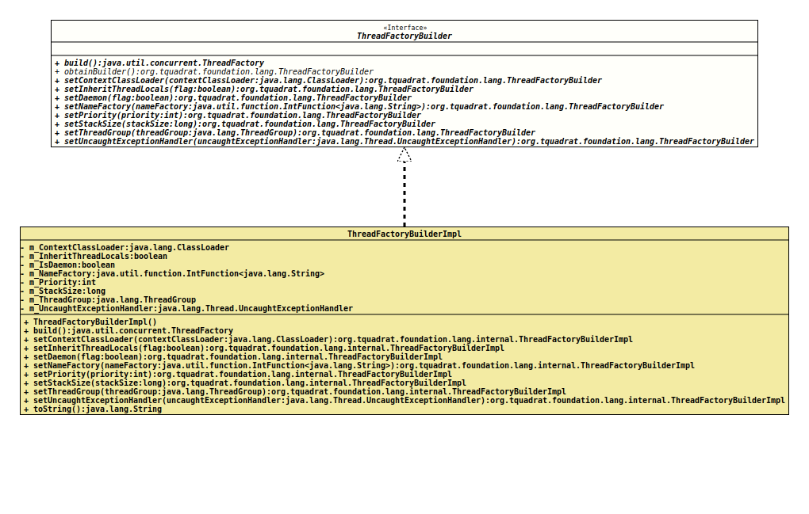

Interface ThreadFactoryBuilder
- All Known Implementing Classes:
ThreadFactoryBuilderImpl
A builder for an implementation of
ThreadFactory.
All values are optional, but null is no valid argument value for
any method in this API.
The simplest use case to get a valid
ThreadFactory
instance is
final var threadFactory = ThreadFactoryBuilder.obtainBuilder()
.build();- Author:
- Thomas Thrien (thomas.thrien@tquadrat.org)
- Version:
- $Id: ThreadFactoryBuilder.java 1035 2022-12-07 15:09:56Z tquadrat $
- Since:
- 0.1.0
- UML Diagram
-

UML Diagram for "org.tquadrat.foundation.lang.ThreadFactoryBuilder"
{kind=link}
-
Method Summary
Modifier and TypeMethodDescriptionbuild()Creates the instance ofThreadFactory.static ThreadFactoryBuilderReturns an instance of the builder.setContextClassLoader(ClassLoader contextClassLoader) Sets the context class loader for the new threads created by the new thread factory.setDaemon(boolean flag) Sets the flag whether the new thread created by the new thread factory should be a daemon thread.setInheritThreadLocals(boolean flag) Sets the flag that controls whether the new threads, created by the new thread factory, will suppress, or not, the inheriting of initial values for inheritable thread-local variables from the constructing thread.setNameFactory(IntFunction<String> nameFactory) Sets the factory for the name of the threads created by the new thread factory.setPriority(int priority) Sets the priority for the new threads created by the new thread factory.setStackSize(long stackSize) Sets the stack size for the new threads created by the new thread factory.setThreadGroup(ThreadGroup threadGroup) Sets the thread group for the new threads created by the new thread factory.setUncaughtExceptionHandler(Thread.UncaughtExceptionHandler uncaughtExceptionHandler) Sets theUncaughtExceptionHandlerfor the new threads created by the new thread factory.
-
Method Details
-
build
Creates the instance ofThreadFactory.- Returns:
- The thread factory.
-
obtainBuilder
Returns an instance of the builder.- Returns:
- A thread factory builder.
-
setContextClassLoader
Sets the context class loader for the new threads created by the new thread factory.
The context class loader allows the creator of the thread to provide the appropriate class loader, through
Thread.getContextClassLoader(), to code running in the thread when loading classes and resources.If not set, new threads will use the system class loader (or, failing that, the bootstrap class loader).
- Parameters:
contextClassLoader- The context classloader.- Returns:
- The builder.
- See Also:
-
setInheritThreadLocals
Sets the flag that controls whether the new threads, created by the new thread factory, will suppress, or not, the inheriting of initial values for inheritable thread-local variables from the constructing thread. This allows for finer grain control over inheritable thread-locals. Care must be taken when setting the flag to
false, as it may lead to unexpected behavior if the new thread executes code that expects a specific thread-local value to be inherited.If not set, the value for the new threads will be
true.- Parameters:
flag-trueif the values for inheritable thread locals will be inherited,falseto disable this feature.- Returns:
- The builder.
- See Also:
-
setDaemon
Sets the flag whether the new thread created by the new thread factory should be a daemon thread. Daemon threads will be aborted automatically when the last non-daemon thread terminates.
If not set, the new threads are not daemon threads.
- Parameters:
flag-trueif the new threads are daemon threads,falseif they are regular threads.- Returns:
- The builder.
- See Also:
-
setNameFactory
Sets the factory for the name of the threads created by the new thread factory.
The name factory method will be call with a numeric argument that is unique for each invocation by the new thread factory; in fact, it is a counter value.
If not set, a name factory is used that returns names looking like this: "
Thread-#" where the hash symbol will be replaced by the counter value.- Parameters:
nameFactory- The name factory.- Returns:
- The builder.
-
setPriority
Sets the priority for the new threads created by the new thread factory. Proper values are -1 (to indicate that the priority should not be set explicitly) and numbers between 1 to 10, inclusively.
If not set, the value will be -1.
If the thread factory will not be configured explicitly with a priority, the newly created threads will get their priority set equal to the priority of the thread calling
ThreadFactory.newThread(Runnable), creating a new thread. The methodThread.setPriority(int)may be used to change the priority to a new value.- Parameters:
priority- The priority value.- Returns:
- The builder.
- Throws:
ValidationException- The given value is not valid.- See Also:
-
setStackSize
Sets the stack size for the new threads created by the new thread factory. The stack size is the approximate number of bytes of address space that the virtual machine is to allocate for the new thread's stack. The effect of the
stackSizeparameter, if any, is highly platform dependent.On some platforms, specifying a higher value for the
stackSizeparameter may allow a thread to achieve greater recursion depth before throwing aStackOverflowError. Similarly, specifying a lower value may allow a greater number of threads to exist concurrently without throwing anOutOfMemoryError(or other internal error). The details of the relationship between the value of thestackSizeparameter and the maximum recursion depth and concurrency level are platform-dependent. On some platforms, the value of thestackSizeparameter may have no effect whatsoever.The virtual machine is free to treat the stackSize parameter as a suggestion. If the specified value is unreasonably low for the platform, the virtual machine may instead use some platform-specific minimum value; if the specified value is unreasonably high, the virtual machine may instead use some platform-specific maximum. Likewise, the virtual machine is free to round the specified value up or down as it sees fit (or to ignore it completely).
Specifying a value of zero for the
stackSizeparameter will cause the new tread factory to not set the stack size for the new threads explicitly.- Note:
-
- Due to the platform-dependent nature of the behaviour regarding this configuration value, extreme care should be exercised in its use. The thread stack size necessary to perform a given computation will likely vary from one JRE implementation to another. In light of this variation, careful tuning of the stack size parameter may be required, and the tuning may need to be repeated for each JRE implementation on which an application is to run.
- Parameters:
stackSize- The stack size for the new threads.- Returns:
- The builder.
- See Also:
-
setThreadGroup
Sets the thread group for the new threads created by the new thread factory.
If no thread group will be specified, the thread group for threads created by the new thread factory is set to the thread group of the thread that called .
ThreadFactory.newThread(Runnable).- Parameters:
threadGroup- The thread group.- Returns:
- The builder.
- See Also:
-
setUncaughtExceptionHandler
ThreadFactoryBuilder setUncaughtExceptionHandler(Thread.UncaughtExceptionHandler uncaughtExceptionHandler) Sets the
UncaughtExceptionHandlerfor the new threads created by the new thread factory.No handler will be set if none is specified for the new factory.
- Parameters:
uncaughtExceptionHandler- The uncaught exception handler.- Returns:
- The builder.
- See Also:
-